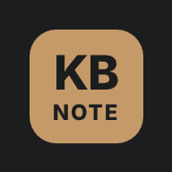

글로벌상품영업부
KB GIS Meeting Note
LP·GP 미팅노트 앱 · 처음 열 때 비밀번호 필요
카카오톡 안에서는 설치할 수 없습니다
사파리·크롬으로 여는 중입니다. 안 열리면 화면 아래(또는 오른쪽 위) ⋯ 를 눌러 다른 브라우저로 열기를 고르세요.
아이폰에 설치
- Safari 아래쪽 공유 버튼을 누릅니다.
공유 버튼이 안 보이면 ⋯ 를 먼저 누르세요. - 목록을 내려 홈 화면에 추가 를 누릅니다.
- 오른쪽 위 추가 를 누르면 홈 화면에 아이콘이 생깁니다.
- 아이콘으로 열고 비밀번호를 입력합니다. "이 기기에서 기억하기"를 켜 두면 다음부터 바로 열립니다.
Safari가 아닌 브라우저라면, 공유 메뉴에 "홈 화면에 추가"가 없을 수 있습니다. 그때는 Safari로 이 링크를 여세요.
안드로이드에 설치
APK 내려받기- 받은 KB-GIS-Meeting-Note.apk 를 다운로드 알림(또는 내 파일 → 다운로드)에서 엽니다.
- "출처를 알 수 없는 앱" 안내가 나오면 설정 → 이 출처 허용 을 켜고 돌아옵니다.
- 설치 를 누릅니다. Play 프로텍트 경고가 나오면 세부정보 더보기 → 그래도 설치.
- 앱 목록의 KB GIS Meeting Note 를 열고 비밀번호를 입력합니다.
새 버전 APK가 설치되지 않으면("기존 패키지와 충돌") 기존 앱을 지운 뒤 설치하세요.
설치 파일 없이 크롬으로 설치
- 크롬 오른쪽 위 ⋮ 메뉴 → 앱 설치 또는 홈 화면에 추가
삼성 인터넷은 아래쪽 ≡ → "현재 페이지 추가" → "홈 화면" - 앱 목록의 아이콘으로 열고 비밀번호를 입력합니다.
휴대폰으로 스캔
휴대폰 카메라로 QR을 찍으면 이 설치 안내가 열립니다.
PC에서도 설치할 수 있습니다: 크롬·엣지 주소창 오른쪽의 설치 아이콘을 누르거나 아래 버튼을 누르세요.
설치했습니다. 홈 화면(또는 앱 목록)의 KB GIS Meeting Note 아이콘으로 여세요.